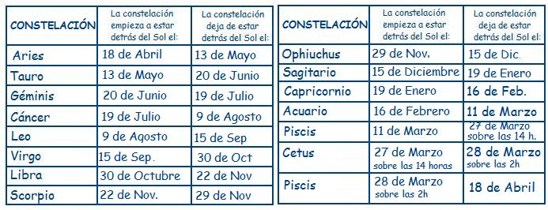
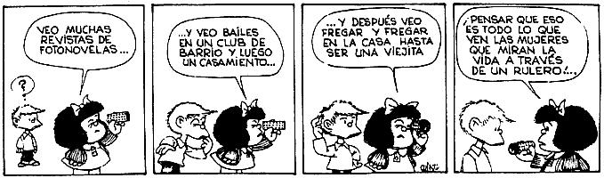

Publicado por primera vez publicado en “El Escéptico Digital” (artículo no encontrado)
William James solía predicar la “voluntad de creer”. Yo, por mi parte, quisiera predicar la “voluntad de dudar”… Lo que se persigue no es la voluntad de creer, sino el deseo de descubrir, que es exactamente lo opuesto.
—Bertrand Russell.
Imagino que lo que aquí voy a contar no sólo les sucede a los aficionados sino también a los profesionales y apostaría que a ellos les ha pasado más a menudo que a los que simplemente somos aficionados.
Seguramente, a todo astrónomo, ya sea profesional o aficionado, estando en alguna conversación, le ha sucedido algo parecido a esto: “Perdón, ¿dices que eres astrónomo? Dime ¿qué sabes de los cáncer?” Y a uno, al menos a mí me pasa, se le empieza a calentar la sangre. Bueno, buscas en tus reservas de paciencia, después de todo la gente no suele estar versada en astronomía. Así pues, con toda tu buena voluntad y paciencia, procedes a explicar algunos hechos básicos de la astronomía para que la persona en cuestión se dé cuenta que está en un error. Sin realizar aquí un análisis exhaustivo, podemos mostrar algunos de esos hechos que prueban que la astrología es simple y llanamente falsa.
Lo primero sería aclarar que son los signos del zodiaco. Como todo el mundo sabe la Tierra gira alrededor del Sol. Evidentemente detrás del Sol aunque muy lejos, hay estrellas, no las vemos porque el Sol que también es una estrella, está muy cerca de nosotros y su brillo nos impide ver las estrellas que están detrás. Por ejemplo si cuando nace una persona, detrás del Sol está el grupo de estrellas que llamamos constelación de Leo, entonces los astrólogos dicen que el signo de esa persona es Leo. Así pues, los signos del zodiaco son simplemente la constelación que está detrás del Sol en el momento en el que nace la persona. Es decir, los signos son una simple cuestión de perspectiva. Ahora bien, la Tierra además de girar sobre si misma y alrededor del Sol tiene otro movimiento más. ¿Han visto alguna vez girar una peonza? La peonza además de girar sobre si misma y desplazarse, tiene cierto cabeceo, su eje de rotación cambia de inclinación constantemente. Pues el movimiento adicional que tiene la Tierra es algo similar. El eje de rotación de la Tierra va cambiando su posición con el paso del tiempo, a este movimiento se le llama precesión de los equinoccios y tiene un periodo de 26000 años. Debido a este movimiento las constelaciones que aparecen detrás del Sol a lo largo del año son las siguientes:
Como pueden observar, las fechas no coinciden con las que usan los astrólogos, incluso aparecen dos constelaciones que los astrólogos no tienen en cuenta ¿alguien ha oído hablar del signo de Ophiuchus? ¿Y del signo de Cetus? Esto pone de manifiesto que lo que nos han contando toda la vida de los doce signos del zodiaco y cuando hay que nacer para ser tal o cual signo es totalmente falso. Ante esto, ¿qué credibilidad puede tener la astrología? Los astrólogos dicen que pueden predecir el futuro y la personalidad de las personas con las estrellas, ¡pero por lo visto no observan lo que hay más arriba de sus cabezas!
¿Se han fijado en las definiciones que hacen los astrólogos de las personalidades de los distintos signos? Es llamativo que se corresponda con las cualidades humanas que normalmente atribuimos a los animales u objetos que representan dichos signos. La astrología en el fondo no es más que un simbolismo barato, cuyas raíces se hunden en la mitología, como mostrare unas líneas más abajo. Por ejemplo, de los libra suelen decir que son justos y equilibrados ¿acaso no son esas las propiedades que atribuimos a una balanza? Los géminis son ambivalentes ¿qué cabria esperar, si el símbolo de su signo es de unos gemelos?¿No deberían tener tendencia a la doble personalidad? De los acuarios suelen decir que tienen una inteligencia transparente, como transparente es el agua que sale del ánfora que aparece en el símbolo que lo representa. Claro que uno no sabe muy bien si con esto les están llamando inteligentes o tontos. Porque la verdad es que no queda muy claro. Todos estos signos y los símbolos que los representas provienen de la mitología griega. Fueron los griegos los que agruparon las estrellas en constelaciones para que formaran las figuras de sus héroes y dioses. La astrología traspasa las cualidades de esos mitos y dioses a las supuestas influencias astrales. Por ejemplo, si estas bajo la “influencia” de Marte, estarás irascible y probablemente tendrás conflictos con las personas que te rodean.
Lógico, Marte en la mitología era el dios de la guerra. Pero el dios de la guerra no existe, y Marte es simplemente un planeta más del Sistema Solar.
Llegados a este punto, podemos recurrir a la mitología para averiguar como seria la personalidad de por ejemplo, Cetus. Que es uno de esos signos que los astrólogos parecen desconocer. Cetus, es el monstruo del mar. Neptuno, el dios del mar, estaba ofendido por Cassiopea ya que esta había asegurado que su hija Andrómeda era más bella que las ninfas marinas. Para solventar semejante agravio, Andrómeda se ofreció en sacrificio a Cetus, quedando así satisfecho Neptuno. Pero Cetus no llego a devorar a Andrómeda, ya que por allí paso Perseo que dio muerte a Cetus antes de que este pudiera realizar su cometido. Así pues, ya podemos proceder a realizar el cuadro de la personalidad de los nacidos bajo el signo de Cetus:
“Los Cetus son unos abusones que tienen tendencia a aprovecharse del más débil. Además no tienen personalidad ya que acatan cualquier orden que se les dé por desagradable u horrible que esta sea. Y para terminar, son unos enclenques, ya que en cuanto alguien un poquito fuerte les planta cara se vienen abajo.”
Hagan la prueba, busquen las raíces mitológicas de los signos zodiacales, y descubrirán como las personalidades que le atribuyen los astrólogos son una simple transposición de las cualidades y acciones de esos mitos y leyendas.
Por si esto no fuera suficiente, podemos ir a las raíces de la propia astrología y ver que también son erróneas. Lo cual hará que la astrología se derrumbe como un castillo de naipes ante una ráfaga de viento, si es que no se había derrumbado ya. Las raíces de la astrología descansan en la concepción que tenia Aristóteles del universo. Aristóteles fue un gran filosofo, pero hasta los más grandes se equivocan. Según Aristóteles el universo está lleno de una única sustancia, el éter. En concreto estaría formado por cincuenta y cinco esferas homocéntricas de éter, siete de las cuales contendrían a Mercurio, Venus, Marte, Júpiter, Saturno, el Sol y la Luna. Todas las esferas estarían en contacto entre si, y el frotamiento de unas con otras sería lo que transmitiría el movimiento. De este modo Aristóteles introdujo un mecanismo físico mediante el cual los cuerpos celestes podrían efectuar cambios sobre la Tierra. Por lo tanto es plausible que se intentara predecir el futuro de las personas mediante el estudio de los cuerpos celestes. Pero hoy en día sabemos gracias al experimento que Michelson y Morley llevaron acabo que el éter no existe. Y las esferas que utilizaba Aristóteles para explicar los movimientos, tampoco existen. ¿La prueba? Pues es bien sencilla, hemos enviado sondas espaciales a la Luna, Venus, Marte, Júpiter, Saturno etc. Y ninguna se ha estrellado contra ninguna esfera.

Sólo comentare otro par de hechos más. Recordemos que las constelaciones no son más que agrupaciones arbitrarias llevadas acabo por la civilización helénica, con la única intención de ver en ellas a sus mitos. Las estrellas que forman una constelación no tienen nada que ver unas con otros. Basta coger un par de estrellas de cualquier constelación y ver a que distancia se encuentran de nosotros. Por ejemplo, las estrellas Aldebarán y Elnath de la constelación de Tauro se encuentran a 68 y 130 años luz de nosotros respectivamente.
Como se puede observar no están a la misma distancia, por lo que no pueden estar juntas. Pero más relevante aun, es que hay estrellas que presentan una separación menor de las estrellas principales de otra constelación que de las de la suya propia. Por ejemplo, la estrella designada por la letra griega Theta de la constelación de libra está a 13,37º de Zuben Elakrab que es de las estrellas principales de dicha constelación la que tiene más próxima, y en cambio esta a tan sólo 6,27º de Graffías una de las estrellas principales de la constelación de Scorpio.
El otro hecho al que voy hacer referencia es más cotidiano y del cual casi todos tenemos constancia. A veces, al nacer un par de gemelos uno de ellos muere mientras que el otro tiene una larga vida. Pero si la astrología es cierta ¿no deberían haber tenido destinos tremendamente similares ya que ambos serian del mismo signo y nacieron con escasos minutos de diferencia?

Recapitulemos, para empezar, la realidad del firmamento no se corresponde con lo que sostiene la astrología, sus bases aristotélicas han sido refutadas, las constelaciones no son entes reales sino agrupaciones arbitrarias de estrellas realizadas por una antigua civilización humana y por ultimo, hechos cotidianos como el que acabamos de mencionar en el párrafo anterior dejan claramente al descubierto la falsedad de la misma. Se podría seguir mostrando hechos que refutan la astrología. Pero como he dicho más arriba, no es mi intención realizar aquí un análisis exhaustivo.
El problema viene cuando, aun explicándole a la gente porque la astrología no puede funcionar, ésta insiste en creer. Bueno, y si sólo fuera eso no habría mucho problema. ¡Allá cada cuál con sus creencias! Pero además no dudan en llamarle a uno negativista, escéptico con tono despectivo o el tan consabido cabeza cuadriculada y estrecho de miras. Y por supuesto no dudan en argumentar que si mucha gente cree en ello será por algo, ¿pero desde cuando el numero de creyentes es prueba de veracidad? De ser así, la Tierra seguiría siendo plana, las brujas existirían y así ad infinitum. Aquí hay algo para reflexionar, ¿por qué la gente prefiere la creencia a la sabiduría? Puedo entender que ciertas creencias resulten esperanzadoras o consoladoras, por ejemplo, puedo entender que haya gente que le guste creer que existe algún Dios bueno y justo que nos compensará en otra vida, o que la vida no acaba con la muerte, sería tan gratificante que volviéramos a ver a nuestros seres queridos. ¿A quién no le gustaría que estas cosas fueran ciertas? A mí personalmente me encantaría, sería tan reconfortante, pero por todo lo que sé, éstos sólo son simples anhelos o deseos, no hechos probados como verídicos, y todo parece indicar que estas creencias no se corresponden con la realidad de cómo es el mundo y engañarnos a nosotros mismos es hacernos un flaco favor. ¿Pero que hay de gratificante o de bello en la astrología? Yo no le veo nada, ¿qué hay de bello en reducir la riqueza de la psicología humana a doce arquetipos simples? ¿Qué hay de bello y consolador en creer que tu vida ya está programada? ¿En que tú no eliges nada, sino que todo está escrito en las estrellas? ¿Qué hay de consolador en creer que no se es libre? Renegar de la libertad es renegar de lo que nos hace humanos. Los humanos nos caracterizamos porque podemos elegir, a veces las opciones que tenemos no nos gustan, pero siempre se puede elegir. Siempre, por difícil que nos resulte, tenemos la libertad de tomar una decisión u otra, esto es algo característico de los humanos, es nuestra libertad de acción. Creer que no es así, que nuestra vida está escrita en las estrellas o de forma más general, que existe un destino en el que todo está escrito, es renunciar a lo que nos hace humanos.
En las personas con este tipo de creencias se detecta una doble moral que espero no adopten de forma consciente. Es curioso, que cuando algo les sale bien es mérito suyo, pero si sale mal, entonces es que estaba escrito en las estrellas, en los posos del café, en el tarot o en lo que se tercie. Me pregunto ¿acaso detrás de estas creencias no se esconde cierto miedo a la libertad? ¿No será que se tiene miedo de lo que implica ser humano? Y es que la libertad no viene sola, tiene una inseparable amiga, cuyo nombre es responsabilidad.
Si somos libres de elegir, entonces las consecuencias de nuestras elecciones son en última instancia y en mayor o menor medida, nuestras. Tener miedo de la responsabilidad que implica el ser libre y camuflarlo bajo una creencia pseudocientífica no nos ayuda en nada, tal vez parezca consolador, pero es sólo eso, una apariencia. En cambio, si aceptamos esa responsabilidad, ésta nos empujará a tomar las decisiones con sumo cuidado, tendremos que pensar muy bien las consecuencias de nuestras acciones antes de elegir. Tal vez pueda parecer banal, pero pienso que eso nos ayuda a ser mejores personas. Olvídense de horóscopos y destinos, valoren su libertad, que es lo que les hace humanos.
Volver a la sección Escepticismo
Comentarios
Comments powered by Disqus